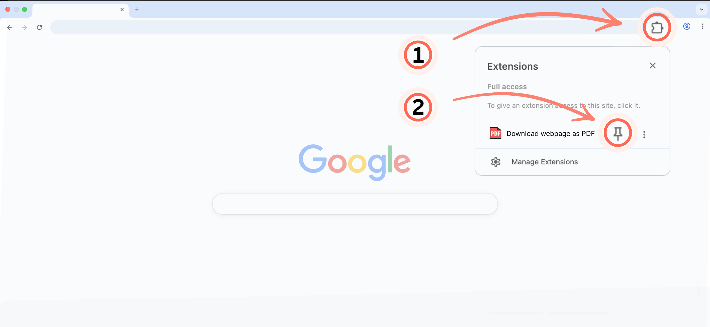

Download webpage as PDF is installed! 🎉 Here’s how to get started.
Open Extensions (1) in the top-right corner of Chrome. Then click the pin (2) next to Download webpage as PDF.

You’re ready! Click the PDF icon (3) whenever you want to save a webpage.